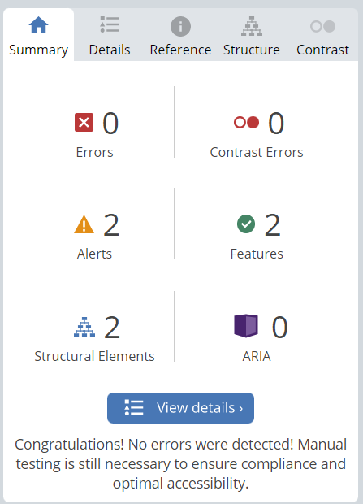

Tilgjengelighet
Generelt så har vi brukt fonter som skal være lett lesbare, men også sammen med fargevalget skal ikke elementene rundt være forstyrrende for svaksynte.
Vi har valgt å bruke en god del skyggelegging bak flere objekter, dette er for å heve objektet frem fra bakgrunnen. Både for å gjøre det visuelt bedre å se på, men også å gjøre objektet visuelt lettere å se.
Hjem
Forsiden er veldig simpel, du får et inntrykk med en liten tekst og et bilde av hva som er på siden. Men dette skal også kunne gi brukere det intrykket de trenger uten å få masse unytting informasjon eller se andre elementer som blir forstryrende. Se tilhørende for å se resultatene fra den automatiske testen.

Booking
Her er det laget to divs, hvor venstre del av siden forteller litt om lokalene. På høyre side er det mulig å sende inn en bestilling via epost. På høyre side kan skjermbilde av WCAG test ses, erroren som vises klager på at knappen ikke har en funksjon. Se tilhørende for å se resultatene fra den automatiske testen.
Meny
Valgte å fjerne bildene når skjermstørrelsen er under 800px med hensyn på for mye scrolling. Vi bestemte oss for å vise rettene i en kolonne for bedre lesbarhet, hver rett har en bilde som representerer retten. Se tilhørende for å se resultatene fra den automatiske testen.
Aktuelt
I aktuelt har vi hentet en oppgave som vi som gruppe leverte i modul 3, her er det kun tekst og lenker. Se tilhørende for å se resultatene fra den automatiske testen.